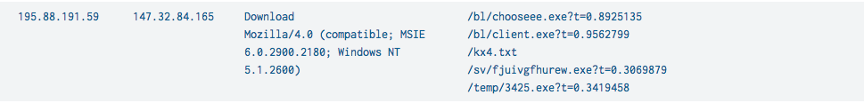
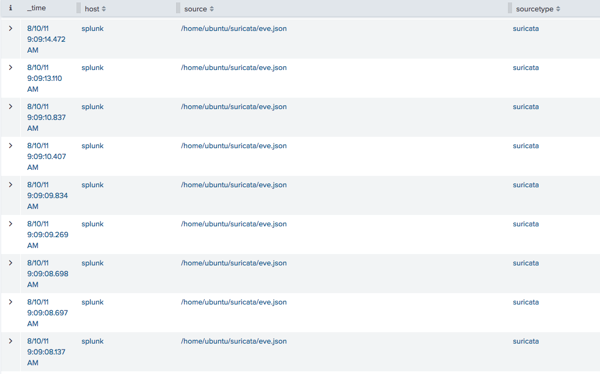
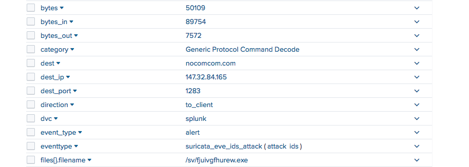
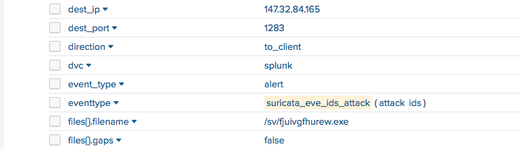
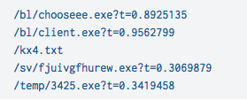
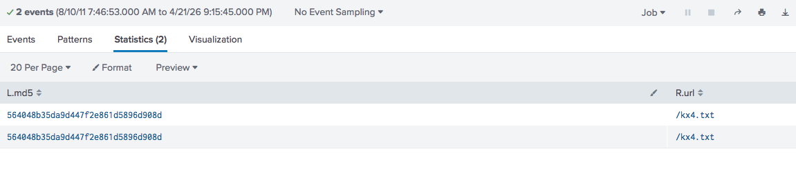
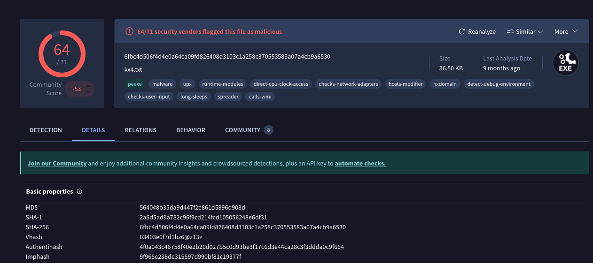

🕵️ NerisBot Lab
Escenario
Se ha detectado una actividad de red inusual en un entorno universitario, lo que indica una posible intención maliciosa. Estas anomalías, observadas hace seis horas, sugieren la presencia de comunicaciones de mando y control (C2) y otros comportamientos dañinos dentro de la red.
Su equipo ha sido encargado de analizar los últimos registros de tráfico de la red para investigar el alcance y el impacto de estas actividades. La investigación tiene como objetivo identificar servidores de comandos y control y descubrir interacciones maliciosas.
Preguntas
Durante la investigación del tráfico de la red, se observaron patrones inusuales de actividad en los registros de Suricata, lo que sugiere un posible acceso no autorizado. Una dirección IP externa inició intentos de acceso y posteriormente se vio descargando un archivo ejecutable sospechoso. Esta actividad indica con fuerza el origen del ataque. Cuál es la dirección IP desde la que se originó el acceso no autorizado inicial?
Al ejecutar el siguiente comando en Splunk:
index=* sourcetype=suricata eventtype=suricata_eve_ids_attack
| stats values(dest_ip) values(http.http_user_agent) values(http.url) by src_ip
podemos observar eventos relacionados con alertas de Suricata, el cual es un IDS. Además, se identifica la descarga de archivos .exe desde una dirección IP específica.

También se puede observar que toda la actividad se realizó de manera muy rápida, lo que sugiere que pudo haber sido automatizada.

Investigar el dominio de los atacantes ayuda a identificar la infraestructura utilizada para el ataque, evaluar sus conexiones con otras amenazas y tomar medidas para mitigar futuros ataques. Cuál es el nombre de dominio del servidor atacante?
Al revisar el listado de detalles en el campo
http.host.namees posible identificar el dominio utilizado durante el ataque.

Conociendo la dirección IP del sistema específico ayuda a enfocar los esfuerzos de rehabilitación y evaluar el alcance del compromiso. Cuál es la dirección IP del sistema que fue blanco de esta brecha?
En los registros analizados, el campo
dest_ippermite identificar la dirección IP que recibe las conexiones asociadas a la actividad sospechosa.

Identificar todos los archivos únicos descargados al host comprometido. Cuántos de estos archivos podrían ser potencialmente maliciosos?
Con el mismo comando inicial, se observa la descarga de 5 archivos únicos potencialmente maliciosos: 4 archivos ejecutables .exe y un archivo de texto .txt.

Qué es el hash SHA256 del archivo malicioso disfrado de archivo .txt ?
Para este caso, fue necesario correlacionar eventos entre Splunk y Zeek. Para ello, se ejecutó la siguiente consulta:
index=* sourcetype=zeek:files tx_hosts="195.88.191.59"
| join left=L right=R where L.seen_bytes=R.bytes
[search index=* sourcetype=suricata src_ip=147.32.84.165 dest_ip=195.88.191.59 url=* ]
| table L.md5, R.url
Mediante esta correlación, fue posible identificar el hash MD5 del archivo asociado a la actividad observada.

Posteriormente, el hash fue analizado en VirusTotal. En la sección de detalles, se puede obtener el hash SHA-256 correspondiente al archivo.
